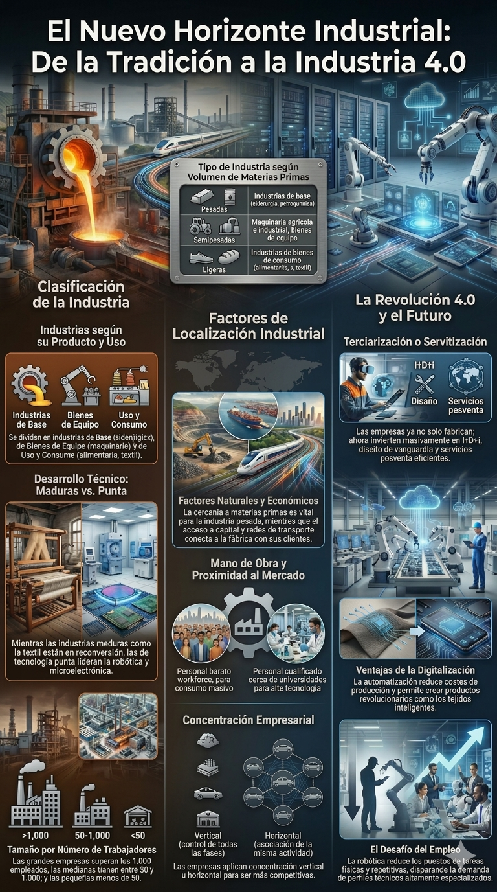
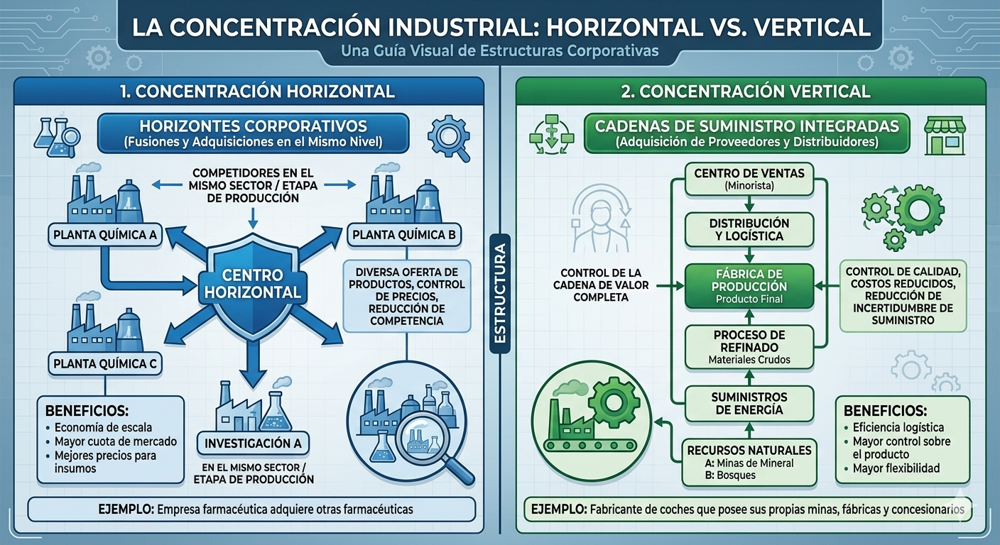
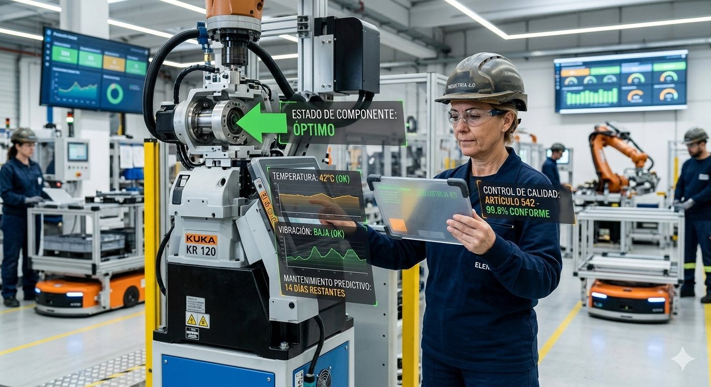

Navegación
Infografia

Tipos de industrias
Clasificación de las industrias
Las industrias se clasifican según diversos criterios:
|
Según los Productos que Fabrican |
|
|
Tipo de Industria |
Ejemplos |
|
Industrias de Base |
Siderúrgica, metalúrgica, petroquímica |
|
Industrias de Bienes de Equipo |
Maquinaria para otras industrias, motores |
|
Industrias de Uso y Consumo |
Alimentaria, automovilística, textil, electrónica de consumo |
|
Según su Desarrollo Técnico |
|
|
Tipo de Industria |
Ejemplos |
|
Industrias Maduras o tradicionales |
Siderurgia, textil (muchas de ellas en declive o reconversión) |
|
Industrias de Tecnología Punta |
Microelectrónica, robótica |
|
Según el Volumen de Materias Primas que Manejan |
|
|
Tipo de Industria |
Ejemplos |
|
Industrias Pesadas |
Industrias de base |
|
Industrias Semipesadas |
Maquinaria agrícola e industrial, bienes de equipo… |
|
Industrias Ligeras |
Industrias de bienes de consumo |
|
Según su Tamaño |
|
|
Tipo de Industria |
Número de Trabajadores |
|
Grandes |
Más de 1,000 |
|
Medianas |
De 50 a 1,000 |
|
Pequeñas |
Menos de 50 |
Además,para reducir la competencia y los costes, las empresas practican la concentración vertical (controlar todas las fases, desde la materia prima hasta la venta) o la concentración horizontal (asociación de empresas de la misma actividad).Es por ello que en este sector predominan las multinacionales, que tienen su sede social en el país de origen y plantas de producción repartidas por todo el mundo.

Factores de localización
La localización industrial es el proceso por el cual una empresa elige el lugar idóneo para instalar sus fábricas con el objetivo principal de obtener el máximo beneficio posible y reducir los costes de producción
Históricamente, esta elección estaba condicionada por la proximidad física a los recursos. Sin embargo, en la actualidad, las mejoras en los transportes y las telecomunicaciones permiten que las industrias tengan hoy una mayor autonomía espacial, aunque siguen valorando factores estratégicos para asegurar su competitividad.
Podemos distinguir los siguientes factores de localización industrial
- Factores naturales: Tradicionalmente eran los más determinantes. La cercanía a los yacimientos de materias primas y a las fuentes de energía (como carbón o saltos de agua) permitía ahorrar enormes costes de transporte. Hoy solo son vitales para la industria pesada o básica
- Factores económicos: Incluyen la disponibilidad de capital para financiar la inversión y la existencia de una buena red de transportes (puertos, ferrocarriles, autopistas) que conecte la fábrica con los proveedores y los clientes
- Factores sociales y mano de obra: Las empresas buscan lugares con abundancia de trabajadores. Dependiendo del tipo de industria, buscarán mano de obra poco cualificada y barata (industrias de consumo como textil o calzado) o personal altamente cualificado (industrias de alta tecnología), situándose en este último caso cerca de universidades y centros de investigación
- Proximidad al mercado: Estar cerca de los centros de consumo (las grandes ciudades) es clave para productos perecederos o aquellos con altos costes de distribución

En la actualidad, el sector secundario atraviesa una transformación profunda conocida como terciarización o servitización industrial.
La industria en la economía actual
Este fenómeno implica que las empresas modernas ya no se limitan exclusivamente a la fabricación de bienes; Para mantener su competitividad en un mercado global, deben orientar la mayor parte de su capital hacia servicios estratégicos vinculados al producto, tales como la investigación, desarrollo e innovación (I+D+i) , el diseño de vanguardia, el marketing especializado y un servicio posventa eficiente.
Este nuevo modelo de producción industrial, enmarcado en la Industria 4.0 , ofrece ventajas competitivas determinantes.
1)La digitalización y automatización permiten una reducción significativa de los costes de producción , impulsada por un aumento notable en la productividad y en la calidad técnica de los artículos.
2)La capacidad de innovación tecnológica ha permitido la creación de productos revolucionarios , como es el caso de los tejidos inteligentes.
No obstante, la implantación masiva de la robótica y la automatización plantea desafíos cruciales para el empleo industrial.
1)Se asiste a una reducción de los perfiles profesionales destinados a tareas físicas, repetitivas y de escasa cualificación, ya que son asumidas progresivamente por máquinas y sistemas inteligentes.
2)Por otro, el aumento de la demanda de perfiles profesionales altamente especializados y con una formación técnica específica.
